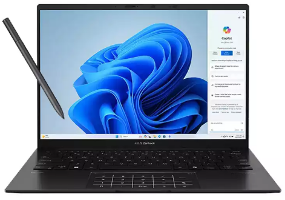
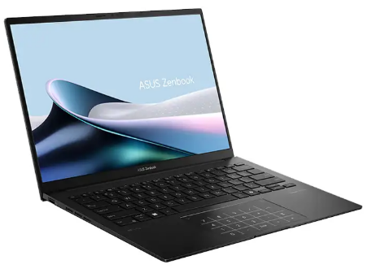

پردازنده اصلی: AMD Ryzen 7 8840HS
حافظه رم: 16 گیگابایت LPDDR5X
حافظه داخلی: 1 ترابایت SSD
حافظه پردازنده گرافیکی: بدون حافظهی گرافیکی مجزا
پردازنده گرافیکی: AMD Radeon Graphics
اندازه صفحه نمایش: 14 اینچ
رزولوشن: OLED 1920×1200، لمسی
وزن: 1.28 کیلوگرم
ظرفیت باتری: 75 وات ساعت
قلم: دارد
ایسوس با معرفی سری Zenbook، لپتاپهایی سبک و باریک با عملکرد بالا و طراحی شیک را برای کاربریهای متنوع ارائه کرده است. لپ تاپ ایسوس مدل Zenbook 14 OLED UM3406HA یکی از جدیدترین مدلهای این سری است که با پردازنده AMD Ryzen 7 8840HS، حافظه رم 16 گیگابایت LPDDR5X، و صفحه نمایش OLED با وضوح بالا، گزینهای ایدهآل برای کاربران عمومی و حرفهای است.
لپ تاپ Zenbook 14 OLED UM3406HA با ابعاد 1.49×22.01×31.24 سانتیمتر، یکی از باریکترین و سبکترین لپتاپهای موجود در بازار است. طراحی باریک و وزن کم این دستگاه باعث میشود که به راحتی قابل حمل باشد و برای کاربرانی که دائماً در حرکت هستند، گزینهای مناسب باشد.ایسوس در طراحی این مدل از متریالهای باکیفیت و مقاوم استفاده کرده است. بدنه فلزی دستگاه نه تنها به آن جلوهای شیک و حرفهای میبخشد، بلکه مقاومت خوبی در برابر ضربهها و خط و خشهای روزمره دارد. طراحی لبههای نازک اطراف صفحه نمایش باعث شده است که این دستگاه به طور کلی ظاهری مدرن و جذاب داشته باشد.
کیبورد و تاچپد:
کیبورد این لپتاپ با کلیدهای نرم و راحت، تجربه تایپ خوبی را ارائه میدهد. نور پسزمینه کیبورد نیز امکان استفاده
در محیطهای کم نور را فراهم میکند. با این حال، عدم وجود NumberPad در تاچپد ممکن است برای برخی کاربران که نیاز
به ورود دادههای عددی دارند، یک نقطه ضعف باشد. تاچپد دستگاه حساس و دقیق است و به خوبی به حرکات مختلف پاسخ
میدهد.
صفحه نمایش 14 اینچی OLED این لپ تاپ یعنی لپ تاپ Zenbook 14 OLED UM3406HA با دقت WUXGA (1920×1200) کیفیت تصویر فوقالعادهای ارائه میدهد. رنگها زنده و پرجنب و جوش هستند و کنتراست بالا باعث میشود تصاویر با جزئیات دقیق نمایش داده شوند. این صفحه نمایش به خصوص برای تماشای فیلم و کارهای گرافیکی بسیار مناسب است.یکی از ویژگیهای برجسته این صفحه نمایش، قابلیت لمسی آن است که به کاربر امکان تعامل مستقیم با صفحه را میدهد. این ویژگی برای کاربرانی که به دنبال استفاده از لپتاپ برای طراحی و کارهای خلاقانه هستند، بسیار مفید است. با این حال، عدم وجود پوشش مات ممکن است باعث بازتاب نور در محیطهای روشن شود که میتواند تجربه کاربری را تحت تأثیر قرار دهد.
لپ تاپ Zenbook 14 OLED UM3406HA با 16 گیگابایت حافظه رم LPDDR5X عرضه میشود که از سریعترین نوع حافظههای موجود
در بازار است. این میزان رم به کاربر امکان میدهد تا به راحتی چندین برنامه سنگین را به طور همزمان اجرا کند و
تجربهای روان و بدون تأخیر داشته باشد.
حافظه داخلی این لپتاپ یک ترابایت SSD است که فضای کافی برای ذخیرهسازی تمامی فایلهای کاربر، از جمله اسناد،
نرمافزارها، و بازیها فراهم میکند. سرعت بالای SSD نیز باعث میشود که زمان بوت شدن دستگاه و اجرای برنامهها به
حداقل برسد و کاربر بتواند بدون تأخیر از دستگاه استفاده کند.
هرچند که حافظه رم این دستگاه قابل ارتقاء نیست، اما حافظه داخلی SSD به راحتی قابل ارتقاء است. این امکان برای
کاربرانی که به فضای بیشتری نیاز دارند، گزینهای بسیار مفید است.
باتری 75 واتساعتی این دستگاه عملکردی بسیار خوب در کاربریهای روزمره ارائه میدهد. این ظرفیت باتری به کاربر
امکان میدهد تا در کاربریهای متوسط تا چندین ساعت بدون نیاز به شارژ مجدد از دستگاه استفاده کند.
مدیریت مصرف انرژی:
با توجه به استفاده از پردازنده AMD و حافظه SSD، این دستگاه در مدیریت مصرف انرژی بسیار بهینه عمل میکند. با این
حال، استفاده از صفحه نمایش OLED ممکن است باعث افزایش مصرف انرژی در شرایط خاص شود.
عمر باتری:
در تستهای مختلف، عمر باتری این دستگاه در کاربریهای عادی حدود 7 تا 9 ساعت بوده است که برای یک لپتاپ باریک و
سبک عملکردی بسیار خوب محسوب میشود. البته استفاده از برنامههای سنگینتر یا اجرای بازیها میتواند این زمان را
کاهش دهد.
| مشخصات فیزیکی | پردازنده مرکزی | حافظه RAM | حافظه داخلی | صفحه نمایش | باتری | |||||||||
|---|---|---|---|---|---|---|---|---|---|---|---|---|---|---|
| ابعاد | سازنده پردازنده | سری پردازنده | مدل پردازنده | فرکانس پردازنده | ظرفیت حافظه رم | نوع حافظه رم | ظرفیت حافظه داخلی | نوع حافظه داخلی | اندازه صفحه نمایش | نوع صفحه نمایش | دقت صفحه نمایش | صفحه نمایش مات | صفحه نمایش لمسی | توضیحات باتری |
| 1.49×22.01×31.24 سانتی متر | AMD | Ryzen 7 | 8840HS | 3.3 تا 5.1 گیگاهرتز | 16 گیگابایت | LPDDR5X | 1 ترابایت | SSD | 14 اینچ | OLED | WUXGA 1920×1200 | خیر | بله | 75Wh |
لپتاپ ایسوس Zenbook 14 OLED UM3406HA با ترکیب فوقالعادهای از پردازنده قدرتمند AMD Ryzen 7، صفحه نمایش OLED با کیفیت، حافظه RAM بالا و طراحی باریک و سبک، یک انتخاب عالی برای کاربران عمومی و حرفهای است. این دستگاه به ویژه برای کاربرانی که به دنبال یک لپتاپ قابل حمل با عملکرد بالا و صفحه نمایش با کیفیت هستند، گزینهای ایدهآل محسوب میشود. هرچند که عدم وجود پردازنده گرافیکی مجزا ممکن است برای برخی کاربران حرفهای محدودیتهایی ایجاد کند، اما در کل این لپتاپ با ارائه عملکردی سریع و تجربه کاربری روان، ارزش سرمایهگذاری را دارد.